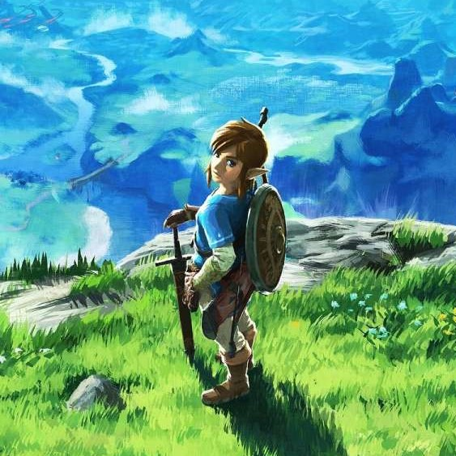
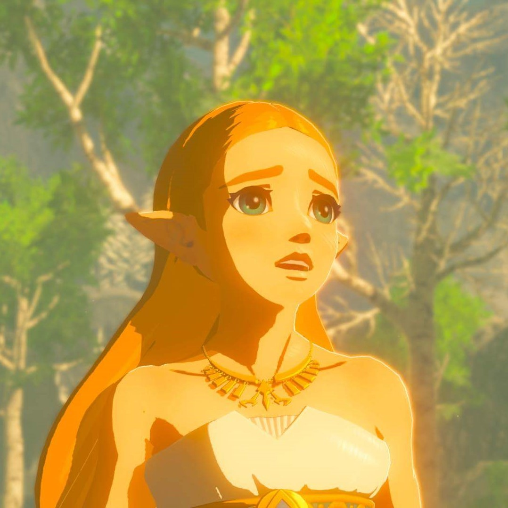
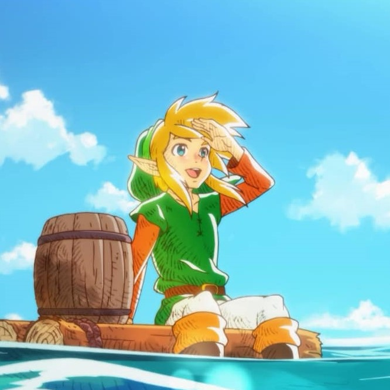

My name is Matéo, I am 21 years and I live in Lille. After a Bachelors in Economics and Business at ISTC, a communication and marketing school, I am currently studying at IESEG School of Management to obtain a Master in Digital Marketing.
Discover IESEGI love reading during my free time. I am mainly attracted to sci-fi and fantasy books such as "The Hunger Games" from Suzanne Collins and "Dune" from Frank Herbert. However, I have read and enjoyed some classics like "Siddhartha" from Hermann Hesse, which received a Litterature Nobel Price.
The Legend of Zelda is my favorite video games saga. The classic "Ocarina of Time" is one of the first video game I have ever played during my childhood. Since then, I became trully attached to this universe with its characters, locations and soundtracks. Did you know that it is considered as one of the greatest games of all time ?
  There is so much to talk about movies. I especially enjoy sci-fi, drama and comedies. My favourite movies include Harry Potter and Interstellar. As I can play the piano since I was a child, I like to play the soundtrack of these films. Dark and The Crown are some of my favorite series.